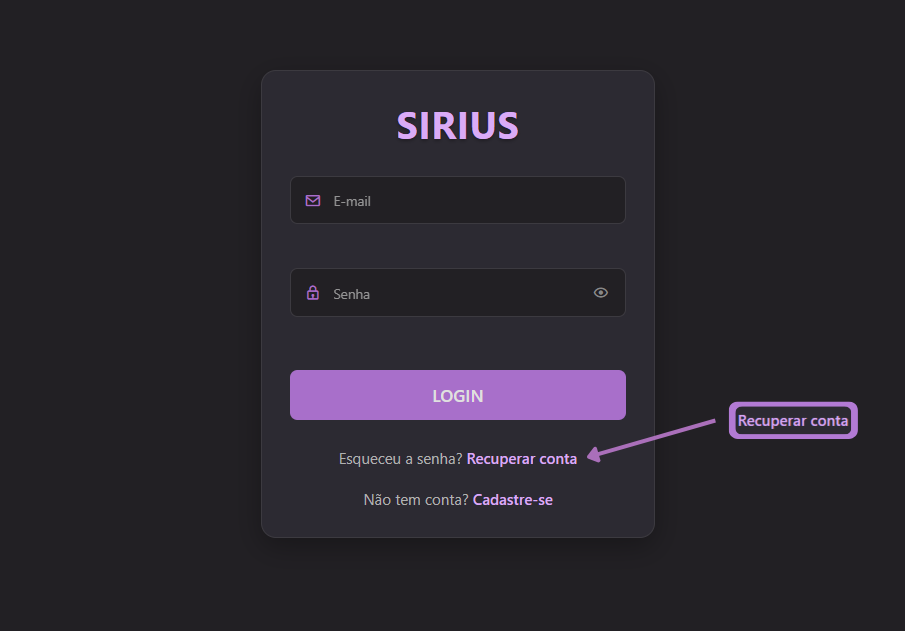

Recuperar Senha
Como recuperar sua senha em 5 passos
Acesse a página de recuperação
Na página de login, clique em "Recuperar conta" abaixo do formulário de acesso. Você será redirecionado para a página de recuperação de senha.
Informe seu e-mail cadastrado
Digite o endereço de e-mail associado à sua conta. Certifique-se de que está digitando corretamente. Clique em "Receber código".
Verifique seu e-mail
Você receberá um e-mail com um código para redefinir sua senha. Se não encontrar na caixa de entrada, verifique sua pasta de spam ou lixo eletrônico.
Insira o código recebido por e-mail
Após receber o código de verificação no seu e-mail, insira-o na página indicada para confirmar sua identidade. Certifique-se de digitar o código corretamente e dentro do prazo de validade.
Crie uma nova senha
Após validar o código, você será direcionado para a página de redefinição. Digite sua nova senha duas vezes para confirmar e clique em "Alterar senha". A nova senha deve ter pelo menos 6 caracteres.
Ainda precisa de ajuda?
Se você não conseguiu recuperar sua senha seguindo estes passos, entre em contato com nosso suporte: